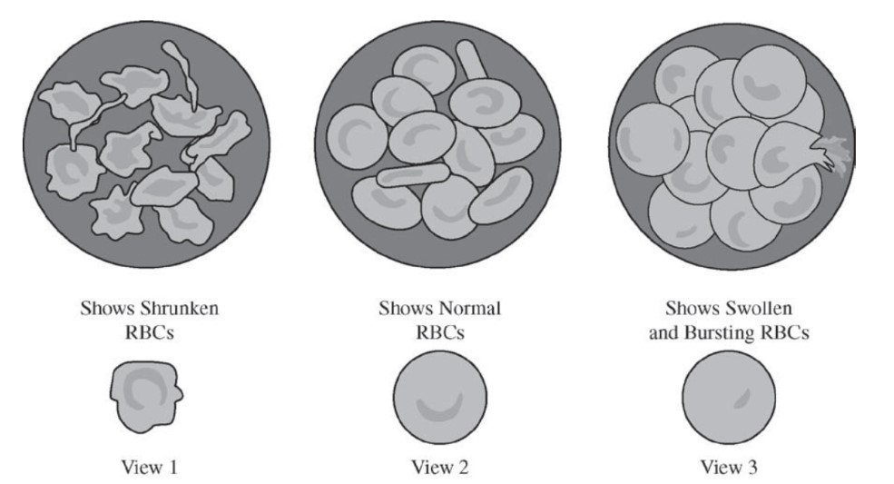

A sample of human blood was placed in a test tube containing a physiological saline solution (0.9% sodium
chloride). This type of solution is often used intravenously to quickly rehydrate patients. A drop of the blood
from the test tube was placed on a slide and red blood cells (RBCs) were observed under a microscope. Three
possible outcomes are diagrammed below.

Which of the following best predicts which diagrammed microscope view the laboratory worker would see and
best explains why?
We can approach this question from a common-sense approach. A doctor would probably want your blood cells to look normal, so view 2 must be correct. View 2 shows a cell in an isotonic solution, where the net movement of water is 0.
Although one might say that a 0.9% sodium chloride solution is hypertonic since it contains solutes, we must remember that there is a similar concentration of salts in your cells.
Most sports drinks are similar to a saline solution. They contain a bit of salt in order to correctly hydrate an athlete. When you're stranded on an island, you cannot drink the ocean water. Drinking distilled water or ocean water would result in swollen or shrunken cells.